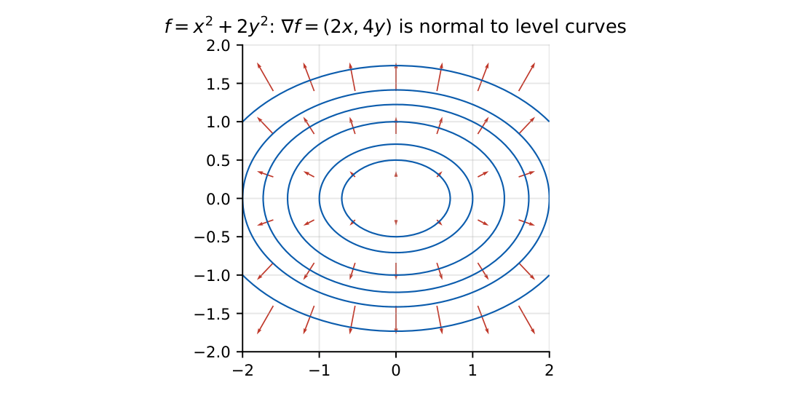

Vector Analysis
In this chapter
Dot and cross products, gradient, divergence and curl identities, directional derivative, and the three integral theorems (Gauss, Green, Stokes). Short evaluation questions on standard fields (\(\mathbf r\), \(r^n\mathbf r\)) dominate.
4.1 Vectors in plane and space; vector operations
For \(\mathbf a=(a_1,a_2,a_3)\), \(\mathbf b=(b_1,b_2,b_3)\):
Dot: \(\mathbf a\cdot\mathbf b=\sum a_ib_i=|\mathbf a||\mathbf b|\cos\theta\). Projection of \(\mathbf a\) on \(\mathbf b\): \(\frac{\mathbf a\cdot\mathbf b}{|\mathbf b|}\).
Cross: \(\mathbf a\times\mathbf b=\begin{vmatrix}\hat i&\hat j&\hat k\\a_1&a_2&a_3\\b_1&b_2&b_3\end{vmatrix}\), \(|\mathbf a\times\mathbf b|=|\mathbf a||\mathbf b|\sin\theta\) = area of the parallelogram. Anti-commutative.
Scalar triple product \(\mathbf a\cdot(\mathbf b\times\mathbf c)\) = volume of the parallelepiped; zero iff coplanar. \(\mathbf a\times(\mathbf b\times\mathbf c)=\mathbf b(\mathbf a\cdot\mathbf c)-\mathbf c(\mathbf a\cdot\mathbf b)\).
Vectors are orthogonal iff \(\mathbf a\cdot\mathbf b=0\) and parallel iff \(\mathbf a\times\mathbf b=0\).
4.2 Vector calculus: gradient, divergence, curl
\(\grad f=(f_x,f_y,f_z)\) points toward the steepest increase, perpendicular to level surfaces; \(|\grad f|\) is the maximum rate of change. Directional derivative along unit \(\hat u\): \(\grad f\cdot\hat u\).
\(\grad\cdot\mathbf F=\partial_xF_x+\partial_yF_y+\partial_zF_z\) (divergence: net outflow per unit volume).
\(\grad\times\mathbf F=\begin{vmatrix}\hat i&\hat j&\hat k\\\partial_x&\partial_y&\partial_z\\F_x&F_y&F_z\end{vmatrix}\) (curl: circulation per unit area).
\(\grad^2f=\grad\cdot\grad f=f_{xx}+f_{yy}+f_{zz}\) (Laplacian).

\(\grad\times(\grad f)=0\) (gradient fields are irrotational), \(\ \grad\cdot(\grad\times\mathbf F)=0\) (curl fields are solenoidal).
\(\grad(fg)=f\grad g+g\grad f\), \(\ \grad\cdot(f\mathbf F)=f\grad\cdot\mathbf F+\mathbf F\cdot\grad f\), \(\ \grad\times\grad\times\mathbf F=\grad(\grad\cdot\mathbf F)-\grad^2\mathbf F\).
For \(\mathbf r=x\hat i+y\hat j+z\hat k\), \(r=|\mathbf r|\): \(\grad r=\mathbf r/r\), \(\grad\cdot\mathbf r=3\), \(\grad\times\mathbf r=0\), \(\grad r^n=nr^{n-2}\mathbf r\), \(\grad\cdot(r^n\mathbf r)=(n+3)r^n\), \(\grad^2(1/r)=0\) for \(r\ne0\).
A field is conservative iff \(\grad\times\mathbf F=0\) (on a simply connected region); then \(\mathbf F=\grad\phi\) and \(\int\mathbf F\cdot d\mathbf l\) depends only on the end points.
4.3 Line, surface and volume integrals
Line integral \(\int_C\mathbf F\cdot d\mathbf l\) (work); surface integral (flux) \(\iint_S\mathbf F\cdot d\mathbf S=\iint\mathbf F\cdot\hat n\,dS\); volume integral \(\iiint f\,dV\). A parametrization \(\mathbf r(t)\) gives \(d\mathbf l=\mathbf r'(t)dt\). For a closed curve in the plane the area is \(\frac12\oint(x\,dy-y\,dx)\).
4.4 Integral theorems
Gauss (divergence): \(\oiint_S\mathbf F\cdot d\mathbf S=\iiint_V\grad\cdot\mathbf F\,dV\) for a closed surface \(S\) enclosing \(V\).
Stokes: \(\oint_C\mathbf F\cdot d\mathbf l=\iint_S(\grad\times\mathbf F)\cdot d\mathbf S\), with \(C\) the boundary of \(S\) (right-hand rule).
Green (plane): \(\oint_C(P\,dx+Q\,dy)=\iint_R\Big(\frac{\partial Q}{\partial x}-\frac{\partial P}{\partial y}\Big)dx\,dy\), \(C\) counter-clockwise. Green is Stokes in the \(xy\)-plane.
Flux of \(\mathbf F=\mathbf r\) through the unit sphere: \(\grad\cdot\mathbf r=3\), so flux \(=3\cdot\frac43\pi=4\pi\). Circulation of \(\mathbf F=(-y,x,0)\) around the unit circle: Green gives \(\iint(1-(-1))\,dA=2\pi\); equivalently Stokes with \(\grad\times\mathbf F=2\hat k\) over the unit disc.
(i) \(\mathbf a\times\mathbf b\ne\mathbf b\times\mathbf a\) (sign). (ii) \(\grad\cdot\mathbf F\) is a scalar, \(\grad\times\mathbf F\) is a vector. (iii) Gauss needs a closed surface; for an open surface close it or use Stokes. (iv) Green’s theorem needs the curve oriented counter-clockwise. (v) \(\grad^2(1/r)=0\) only away from the origin.
If \(\grad\times\mathbf F=0\), line integrals depend only on the end points, and closed-loop integrals vanish. For a flux through a closed surface compute \(\grad\cdot\mathbf F\) and multiply by the volume if it is constant. Use \(\grad r^n=nr^{n-2}\mathbf r\) rather than differentiating component by component.
4.5 GATE problems
Q1. \(\grad\cdot\mathbf r\) in 3-D equals (A) 0 (B) 1 (C) 3 (D) \(r\).
Q2. \(\grad\times(\grad f)=\) (A) \(f\) (B) \(\grad^2f\) (C) \(\mathbf 0\) (D) \(\grad\cdot f\).
Q3. \(\mathbf a=(1,2,3)\), \(\mathbf b=(4,-5,6)\): \(\mathbf a\cdot\mathbf b=\) (A) 12 (B) 18 (C) 28 (D) \(-12\).
Q4. Stokes’ theorem relates a line integral around a closed curve to (A) the divergence over a volume (B) the curl flux through a bounded surface (C) the gradient (D) the Laplacian.
Answers: Q1 (C). Q2 (C). Q3 (A): \(4-10+18=12\). Q4 (B).
Q5. \(f=x^2y+z\). The directional derivative at \((1,2,3)\) along \((1,2,2)\) is (A) \(8/3\) (B) \(8\) (C) \(4\) (D) \(3/8\).
Q6. \(\mathbf F=(x^2,y^2,z^2)\). \(\grad\cdot\mathbf F\) at \((1,1,1)\) is (A) 2 (B) 3 (C) 6 (D) 0.
Q7. \(\mathbf F=(y,-x,0)\). \(\grad\times\mathbf F=\) (A) \(2\hat k\) (B) \(-2\hat k\) (C) \(\mathbf 0\) (D) \(\hat k\).
Answers: Q5 (A): \(\grad f=(2xy,x^2,1)=(4,1,1)\), unit direction \((1,2,2)/3\): \((4+2+2)/3=8/3\). Q6 (C): \(2x+2y+2z=6\). Q7 (B): \(\partial_x(-x)-\partial_y(y)=-2\).
Q8. \(\oint(x\,dy-y\,dx)\) counter-clockwise around the circle \(x^2+y^2=4\) equals \(k\pi\), \(k=\) .
Q9. Flux of \(\mathbf F=(x,y,z)\) outward through the sphere of radius 2 is \(k\pi\), \(k=\) .
Q10. \(|\mathbf a\times\mathbf b|\) for \(\mathbf a=(2,0,0)\), \(\mathbf b=(1,3,0)\) is .
Answers: Q8: twice the area, \(2\cdot4\pi=8\pi\), \(k=8\). Q9: \(3\cdot\frac43\pi8=32\pi\), \(k=32\). Q10: \(\mathbf a\times\mathbf b=(0,0,6)\), magnitude 6.
Q11. Which identities always hold? (A) \(\grad\cdot(\grad\times\mathbf F)=0\) (B) \(\grad\times\grad f=\mathbf0\) (C) \(\grad\cdot\grad f=0\) (D) \(\grad\times(\grad\cdot\mathbf F)=0\) is meaningful.
Answers: Q11: (A), (B). (C) is the Laplacian, not zero in general; (D) is the curl of a scalar, meaningless.
T1. \(\grad\cdot(r^2\mathbf r)\)? T2. Area enclosed by a curve from Green’s theorem? T3. Is \(\mathbf F=(y,x,0)\) conservative?
Answers: T1: \((2+3)r^2=5r^2\). T2: \(\frac12\oint(x\,dy-y\,dx)\). T3: yes, \(\grad\times\mathbf F=0\), \(\phi=xy\).
- \(\mathbf a\cdot\mathbf b\), \(|\mathbf a\times\mathbf b|\) = area, triple product = volume.
- \(\grad f\perp\) level sets; directional derivative \(=\grad f\cdot\hat u\).
- \(\grad\times\grad f=0\), \(\grad\cdot\grad\times\mathbf F=0\); \(\grad\cdot\mathbf r=3\), \(\grad r^n=nr^{n-2}\mathbf r\).
- Gauss: flux \(=\iiint\grad\cdot\mathbf F\); Stokes: circulation \(=\) curl flux; Green: \(Q_x-P_y\).
- Conservative \(\iff\) irrotational \(\iff\) path-independent.